|
During September and October, 1999, my wife Ann and I had a lot of fun visiting my walk- I took lots of pictures, and I have others taken by Steve Ryan and Rich Whorl. Twelve of the pictures are shown below.
|
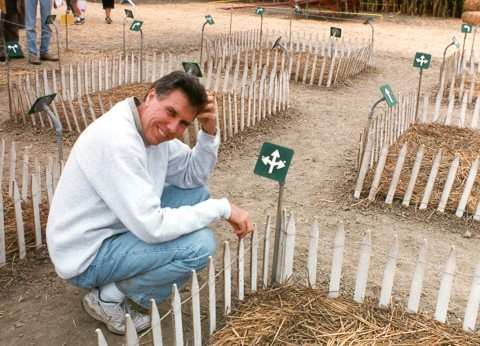 | These pictures from the Pacific Earth site were sent to me by Steve Ryan. That’s Steve trying to look puzzled in my arrow maze. Steve creates TV game shows, writes a newspaper column of puzzles, and is the author of many books on puzzles and games. |
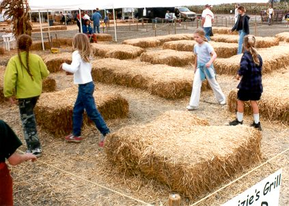
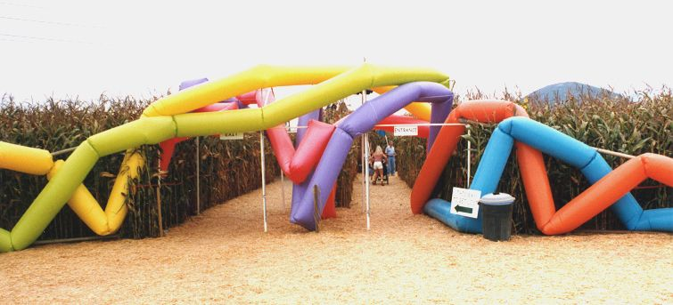
| Here’s the entrance to the cornfield maze. It looks pretty wild. Those strange blobby tubes are the creation of the artist Doron Gazit. In the future, the American Maze Company might try to create a maze out of these tubes. |
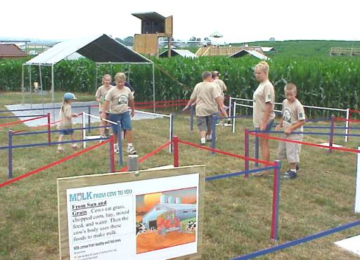 |
This is my color maze. The picture was taken by Rich Whorl using a digital camera. Rich is the designer of several of the cornfield mazes. |
|
Below is a picture I took of the same maze. In the background is the cornfield maze, and behind the cornfield maze is the Strasburg excursion railroad. The railroad has a stop next to the maze; so you can combine a trip on the railroad with a trip through the maze. In addition to the railroad, the cornfield maze, and my logic mazes, Cherry Crest Farm has kiddy rides, a rope maze by Adrian Fisher, and a petting zoo— |
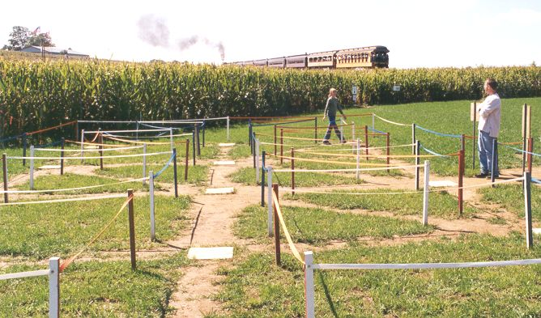
|
Here are a couple of scenes of my arrow maze. | ||
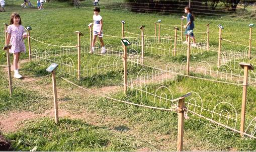 |
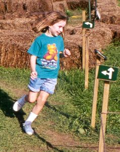 | |
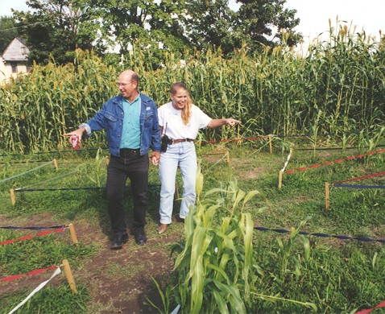
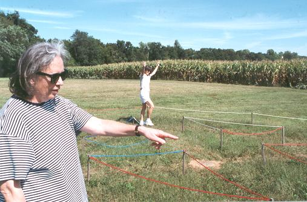 |
I persuaded some friends to join Ann and me at the Belvedere Plantation mazes. In the foreground is Ruth Grindrod and in the background is Susan Johnson. Susan has just discovered the solution to the color maze. |
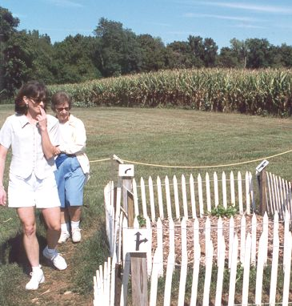 |
Here’s the arrow maze. At the left is Susan Johnson with Ann Abbott behind her. |
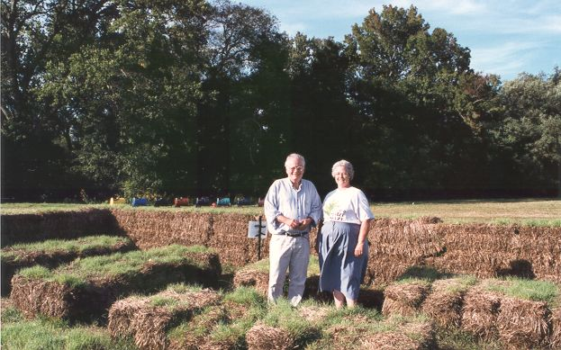
|
That’s me with Judy Fulks, the owner of Belvedere Plantation. She regaled us with stories from the seventeen hundreds when Martha Dandridge (the future Mrs. George Washington) was a frequent visitor to the plantation.
We’re standing in my no-left-
A lot goes on at Belvedere Plantation besides the mazes. The picture below shows some of the other activities. |
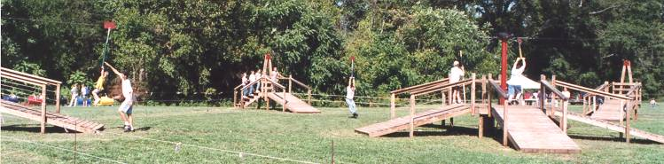
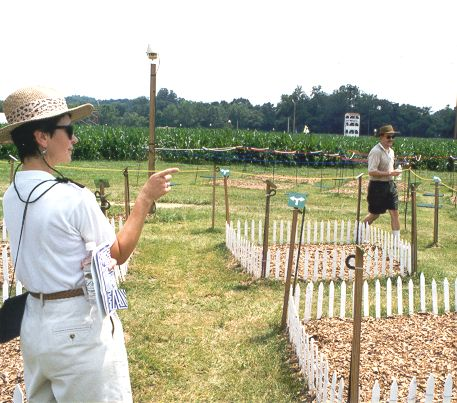
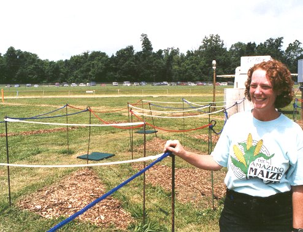